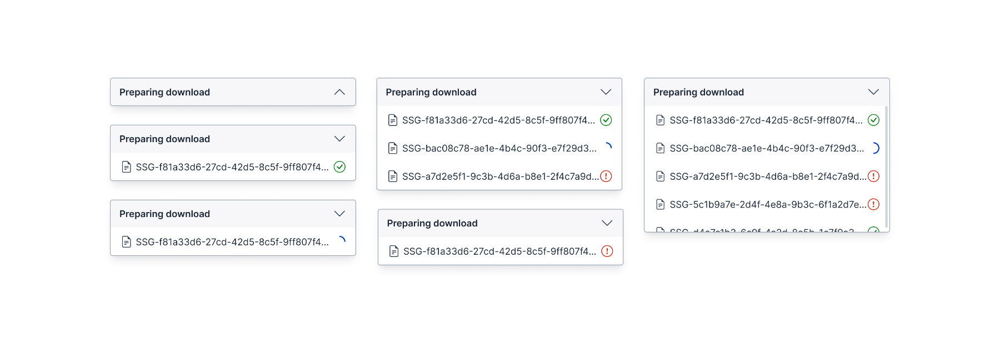

Selected work
Projects that I’ve had a hand in shaping.
CrowdTaskSG · Aug 2026
Growing a daily reading habit with the ReadSG Challenge
Redesigning NLB's national reading challenge to help Singaporeans build a 15-minutes-a-day reading habit.

CrowdTaskSG · Jun 2026
Building a personality quiz feature for agencies to run more engaging campaigns
Adding a guided personality quiz to CrowdTaskSG campaign pages, so agency users can turn visitors into engaged participants.

CrowdTaskSG · April 2026
Reducing agency image-export time on CrowdTaskSG
Adding bulk image downloads so agency users can export campaign photos in one step instead of saving them one by one.

ADDX · Oct 2024
Redesigning the app store preview screens to increase app downloads and user growth
Updating the app's App Store preview screens — unchanged since 2021 — to better reflect its current features and appeal to potential users.